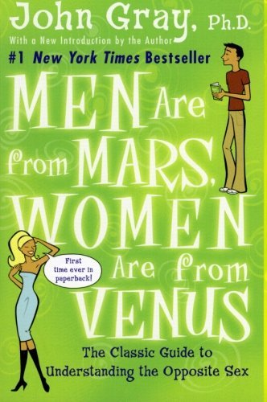
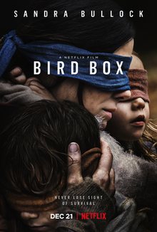

Men Are from Mars, Women Are from Venus

"Men Are from Mars, Women Are from Venus" is a popular book that explores the differences between men and women in relationships. It provides valuable insights into how men and women communicate, express love, and understand each other. The book offers practical advice for improving communication and building stronger relationships.
Land of Zykola
"Land of Zykola" is an enchanting adventure book that takes readers on a magical journey to a mystical land. It follows the thrilling quest of a young protagonist as they navigate through hidden realms, encounter mythical creatures, and face daring challenges. With captivating storytelling and vivid imagery, the book sparks imagination and invites readers to explore a world filled with wonder and excitement.
Bird Box

"Bird Box" is a thrilling post-apocalyptic movie where people must blindfold themselves to survive against a mysterious force. Follow a courageous protagonist as she protects her family in a world filled with danger and suspense. It's a gripping ride from start to finish.
Sherlock Holmes
"Sherlock Holmes" is a thrilling detective movie featuring the iconic character. Join Sherlock Holmes and Dr. Watson as they solve mysteries and uncover conspiracies in an action-packed adventure. Prepare for a suspenseful journey into the brilliant mind of Sherlock Holmes.